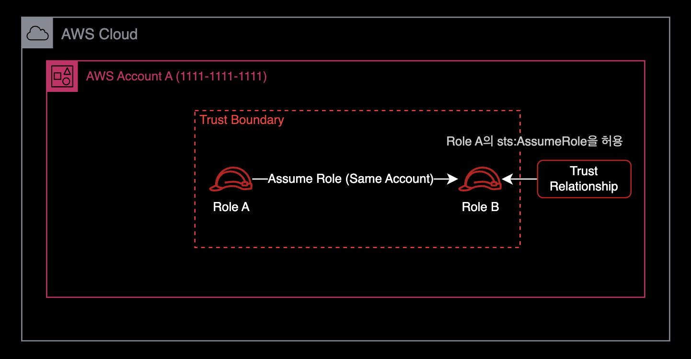
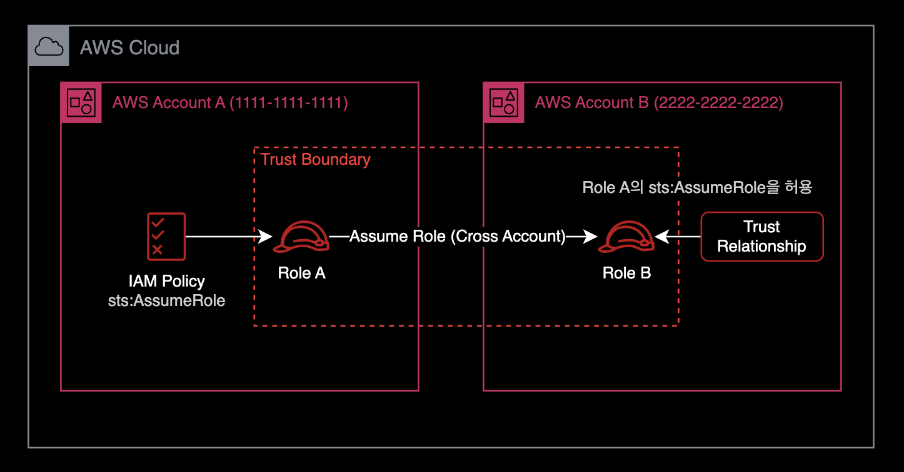

Role to Role AssumeRole 설정
개요
IAM Role이 다른 IAM Role을 AssumeRole 하도록 허용하려면 Assume될 IAM Role의 신뢰 관계Trust Relationship 설정을 수정해야 한다.
중요
2개의 IAM Role이 같은 AWS 계정 내에 있는지, 아니면 서로 다른 AWS 계정에 있는지에 따라 IAM 설정 방법이 다르다.
해결방법
IAM Role이 같은 AWS 계정에 있을 때
Role A와 Role B라는 2개의 IAM Role이 있다고 가정해 보자.
이 2개의 IAM Role은 같은 AWS 계정에 존재한다.

Role A가 Role B를 AssumeRole 할 수 있도록 허용하려면 먼저 Role B의 신뢰 관계Trust Relationship 설정을 다음과 같이 수정해야 한다.
Role B에 설정된 신뢰 관계 (Same-account)
{
"Version": "2012-10-17",
"Statement": [
{
"Effect": "Allow",
"Principal": {
"AWS": "arn:aws:iam::111111111111:role/Role_A"
},
"Action": "sts:AssumeRole"
}
]
}
동일한 AWS 계정 내에서 IAM Role이 또다른 IAM Role을 AssumeRole 할 수 있게 허용하려면 신뢰 관계Trust Relationship 설정만 추가해주면 끝난다.
Principal
권한을 부여할 IAM Role을 지정하는 보안 주체Principal 요소에 유의한다.
일반적으로 보안 주체Principal 요소는 정책에서 IAM User, IAM Role, AWS Service에 다른 AWS 리소스에 대한 액세스 권한을 부여하는 데 사용된다.
AWS IAM 공식문서에서 보안주체Principal 요소에 대해 더 자세한 정보를 얻을 수 있다.
IAM Role이 서로 다른 AWS 계정에 있을 때
Role A와 Role B가 서로 다른 AWS 계정에 있다고 가정해본다.
이 경우, 신뢰 관계Trust Relationship 설정은 두 IAM Role이 동일한 AWS 계정에 있을 때처럼 똑같이 설정해주면 된다.
Role B의 신뢰 관계Trust Relationship 설정에 Role A가 AssumeRole 할수 있도록 허용해준다.
여기서 중요한 차이점은 Role A에 sts:AssumeRole 권한이 있는 추가 정책Policy이 필요하다는 점이다.

따라서 최종 IAM 설정 결과는 다음과 같다.
Role B에 설정된 신뢰 관계 (Cross-account)
{
"Version": "2012-10-17",
"Statement": [
{
"Effect": "Allow",
"Principal": {
"AWS": "arn:aws:iam::111111111111:role/Role_A"
},
"Action": "sts:AssumeRole"
}
]
}
2개의 IAM Role이 같은 AWS 계정에 속한 경우와 신뢰 관계Trust Relationship 설정 내용은 동일하다.
Role A에 설정된 Policy
그리고 Role A에는 다음과 같은 정책Policy가 부여되어야 한다.
{
"Version": "2012-10-17",
"Statement": {
"Effect": "Allow",
"Action": "sts:AssumeRole",
"Resource": "arn:aws:iam::222222222222:role/Role_B"
}
}
이제 Role A는 다른 계정에 있는 Role B를 AssumeRole 할 수 있다.
결론
IAM Role이 다른 AWS 계정의 IAM Role을 AssumeRole 하는 경우가 그렇게 흔한 케이스는 아니다.
그래서 나도 처음에 sts:AssuemRole이 거부되는 에러를 마주했을 때 쉽게 해결책을 찾을 수 없었다.
중요
결과적으로 다른 AWS 계정에 있는 IAM Role을 AssumeRole 하기 위해서는 수행하는 Role 쪽에 sts:AssumeRole을 허용하는 Policy 추가가 반드시 필요하다.
참고자료
영문 | AWS IAM: Allowing a Role to Assume Another Role
제 경우 결정적으로 위 가이드를 통해 문제를 해결했습니다.
한글 | [기술부채] trust relationship? assume role?
신뢰 관계Trust Relationship와 AssumeRole을 쉽게 설명한 글.
API Reference - Actions, resources, and condition keys for AWS Security Token Service
AWS 공식문서